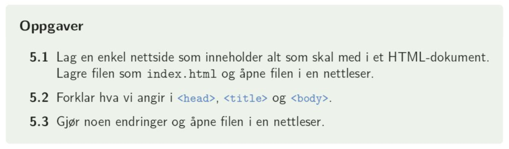

Dette avsnittet handler om hvordan vi oppretter html-dokumenter og hvordan et html-dokument er bygget opp.
Teksten som er skrevet i < body > vises på skjermen. Hvis det ikke skal vises må det skrives som en kommentar mellom < !-- og -- >. Koden for å sette inn et bilde kan se ut som vist i skjermbildet under. Her ser vi at mappestrukturen vår avgjør om bildet vises.
For å å skrive vanlig tekst og kunne velge stil på den senere, skriver vi den i avsnitt mellom taggene < p > og < /p >.
< !DOCTYPE html > forteller nettleseren at dette er et html-dokument
Mellom < html > og < /html > står alt html-innholdet på siden
Mellom < head > og < /head > ligger all informasjon om siden:
< meta charset = "UTF-8" > er informasjon om at vi bruker tegnsettet UTF-8
Mellom < title > og < /title > legges den teksten som vises i fanen i nettleseren
Mellom < body > og < /body > legges alt som skal vises på nettsiden: tekst, bilder, filmer, lister, tabeller også videre
Nå er det viktig å holde orden i filene dere laster ned fra itslearning og filene dere lager selv: alt dere laster ned fra Teams/OneNote skal flyttes fra nedlastinger til en mappe som f.eks. heter Astas notater / notater fra timen eller annet. Alt dere lager selv skal legges i en mappe som f.eks. heter Oppgaver / Arbeid med nettsider eller annet. I disse mappene skal dere ha undermapper til bilder og eventuelt også til css-filer. Dere vil få bruk for dette på videre prøver, så dere får igjen for å gjøre det ordentlig!
1. Lag et ordentlig filarkiv for notater og for oppgaver. Pass på at alt dette vises i prosjektet i atom.
2. Læreboka side 42: Oppgave 5.1 til 5.3
